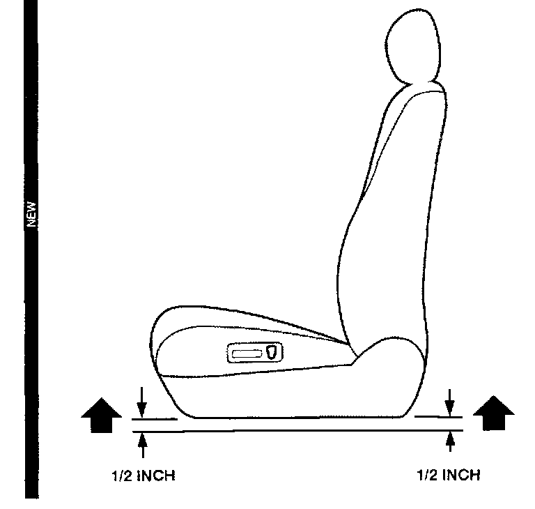
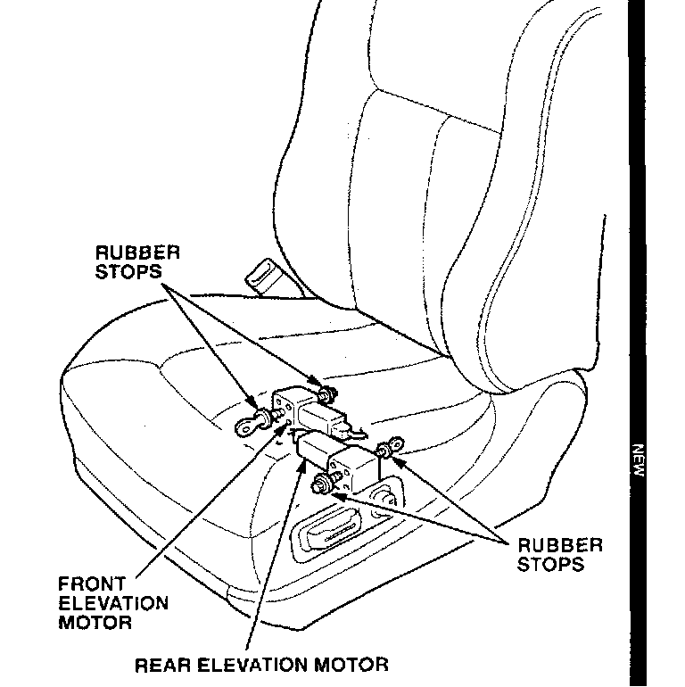
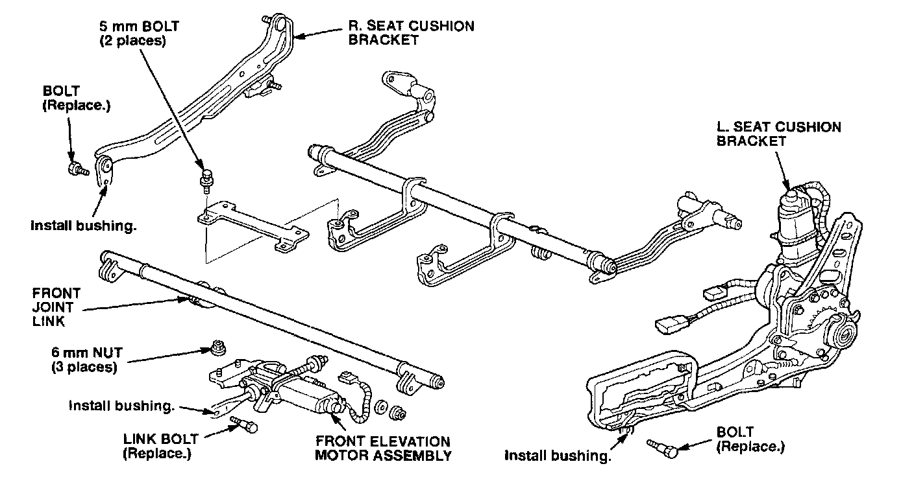
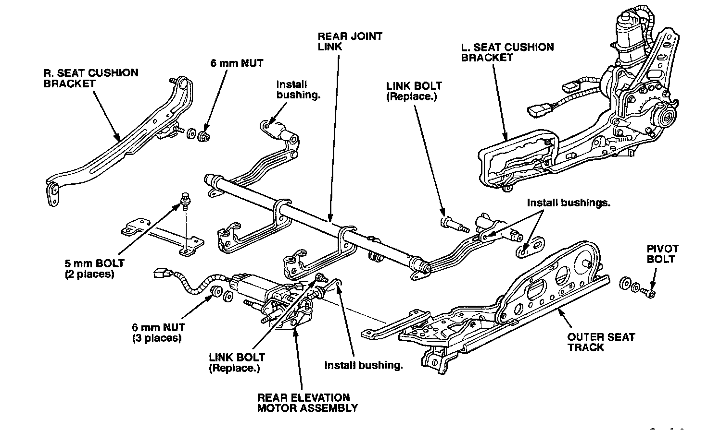

Interior - Driver's Seat Rocks
September 28, 1993BULLETIN NO.
92-017
YEAR
[NEW] 1991-93
MODEL
LEGEND
VIN APPLICATION
ALL
Driver's Seat Rocks
(Supersedes 92-017, dated January 19, 1993)
** Indicates updated information **
Black bars in illustrations indicates updated information.
SYMPTOM
The driver's seat feels like it is rocking slightly on its mounts.
PROBABLE CAUSE
The drive mechanisms in the front and rear elevation motors or the bushings in the associated linkages have too much clearance.
DIAGNOSIS [NEW]
[NEW] Before removing the driver's seat, identify which motor(s) or bushing(s) are loose by doing this procedure:

[NEW] 1. Lower the seat cushion all the way (front and rear); then, raise each end of the cushion about 1/2 inch.

[NEW] 2. Carefully reach under the rear of the seat cushion. Locate the rubber stops on the screw shafts of the elevation motors. The right motor is for the front of the seat cushion; the left motor is for the rear of the seat cushion.
[NEW] 3. With your hand on the rubber stops, have an assistant sit in the seat and rock it back and forth. To avoid getting your hand pinched, do not let the assistant move the seat with the motors.
With the seat being rocked, check for an in-and-out movement of approximately 2 - 3 mm on the screw shaft of both motors.
^ If you feel a 2 - 3 mm movement in either motor, replace only that motor, and install the bushing kit.
^ If both motors feel tight (little or no movement), only install the bushing kit.

CORRECTIVE ACTION
[NEW] Install the bushing kit listed under PARTS INFORMATION. If the elevation motors were diagnosed as being bad, replace them. Refer to Section 20 of the appropriate service manual.
1. Remove the headrest from the driver's seat.
2. Move the seat forward. Remove the seat track covers and mounting bolts from the rear of the seat.
3. Move the seat backward and upward as far as it will go. Remove the seat track covers and mounting bolts from the front of the seat.
4. Coupe Only - Remove the plastic cap ann the lower anchor bolt from the seat belt presenter.
5. Lift the front of the seat, and support it with a 10-inch-long piece of wood.
6. Disconnect all electrical connectors, and remove the seat from the car.
7. Remove the cushion front, recline, and height covers from the seat.
8. Disconnect the four motor power and pulser connectors. Remove the front elevation motor power connector from the bracket on the rear elevation motor. Remove the rear elevation motor pulser connector from the bracket on the front elevation motor.
9. Remove and discard the link bolt attaching the screw shaft of the front elevation motor to the front joint link.
10. Remove and retain the two 5 mm crossbrace bolts.
11. Remove the three 6 mm front elevation motor assembly mounting nuts. Remove the motor assembly.
[NEW] 12. If the screw shaft of the front elevation motor was diagnosed as being loose, replace the motor assembly. If the screw shaft was diagnosed as being tight, remove the old bushing from the screw shaft.
[NEW] 13. Install a new bushing from the kit in the screw shaft of the front elevation motor. Install the bushing so the split is facing the floor of the car. Flare the end of the bushing with a smooth, rounded object.
[NEW] 14. Install the front elevation motor assembly. Tighten the three mounting nuts to 10 N.m (1.0 kg-m, 7 lb-ft).
15. Install a new link bolt from the bushing kit to attach the screw shaft of the front elevation motor to the front joint link. Tighten the link bolt to 10 N.m (1.0 kg-m, 7 lb-ft).
16. Reinstall the 5 mm crossbrace bolts. Tighten the bolts to 5 N.m (0.5 kg-m, 3.6 lb-ft).
17. Remove and discard the two bolts attaching the front joint link outer arms to the seat cushion brackets.
18. Install new bushings in these links. Insert the bushings so the split is facing the floor of the car. Flare the ends of the bushings with a smooth, rounded object.
19. Reattach the front joint link to the seat cushion brackets with two new bolts from the bushing kit. Tighten the bolts to 10 N.m (1.0 kg-m, 7 lb-ft).

20. Center the seat on the tracks by applying 12 volts to the fore/aft slide motor connector. Use a two-pin male connector with extension leads so you do not damage the motor connector.
21. Remove and discard the link bolt attaching the screw shaft of the rear elevation motor to the rear joint link.
22. Remove and retain the two 5 mm crossbrace bolts.
23. Remove the three 6 mm rear elevation motor assembly mounting nuts. Remove the motor assembly.
[NEW] 24. If the screw shaft of the rear elevation motor was diagnosed as being loose, replace the motor assembly. If the screw shaft was diagnosed as being tight, remove the old bushing from the screw shaft.
[NEW] 25. Install a new bushing from the kit in the screw shaft of the rear elevation motor. Install the bushing so the split is facing the floor of the car. Flare the end of the bushing with a smooth, rounded object.
[NEW] 26. Install the rear elevation motor assembly. Tighten the three mounting nuts to 10 N.m (1.0 kg-m, 7 lb-ft).
27. Reinstall the two 5 mm crossbrace bolts. Tighten the bolts to 5 N.m (0.5 kg-m, 3.6 lb-ft).
28. Install a new link bolt from the bushing kit to attach the screw shaft of the rear elevation motor to the rear joint link. Tighten the link bolt to 10 N.m (1.0 kg-m, 7 lb-ft).
29. Move the seat all the way back on the tracks by applying 12 volts to the fore/aft slide motor connector.
30. Disconnect the rear joint link outer pivot points from the seat cushion brackets.
^ Right side - remove and retain the 6 mm nut and washer.
^ Left side - remove and discard the link bolt. Remove and retain the joint pivot bolt (Allen head).
31. Install three new bushings. Insert the bushings so the split is facing the floor of the car. Flare the ends of the bushing with a smooth, rounded object.
32. Reinstall the joint pivot bolt. Install a new link bolt from the bushing kit. Reinstall the 6 mm washer and nut. Tighten all three to 10 N.m (1.0 kg-m, 7 lb-ft).
33. Reconnect the motor power and pulser connectors, and install the connectors on the motor assembly brackets.
34. Reinstall the cushion front, recline, and height covers onto the seat.
35. Place the seat in the car, and reconnect the electrical connectors.
36. Coupe Only - Install the lower seat belt pivot 10 the seat belt presenter. Tighten the bolt to 32 N.m (3.2 kg-m, 23 lb-ft). Install the plastic cap.
37. Install the four seat track mounting bolts, and tighten them to 35 N.m (3.5 kg-m, 25 lb-ft). Install the tour seat track covers.
38. Install the headrest onto the driver's seat.
39. Move the seat bottom and seat back through their full ranges to make sure they do not bind.
[NEW] 40. To confirm that the rocking has beer eliminated, perform the DIAGNOSIS procedure.
PARTS INFORMATION
Front elevation motor assembly: 81518-SP0-A21
Rear elevation motor assembly: 81519-SPO-A21
[NEW] Bushing kit: 81510-SPO-315
(kit includes 11 bushings and five bolts. Only seven bushings are required to do one seat.)
WARRANTY CLAIM INFORMATION
In warranty:
The normal warranty applies.
Out of warranty:
Any repair performed after warranty expiration may be eligible for goodwill consideration by the District Service Manager or your Zone Office. You must request consideration, and get a decision, before starting work.
Operation number: 851168
[NEW] Flat rate time: 1.7 hours [Includes installing
bushings and replacing motor(s),
if necessary]
Failed P/N: 81518-SPO-A21
Defect code: 061
Contention code: B99

Disclaimer